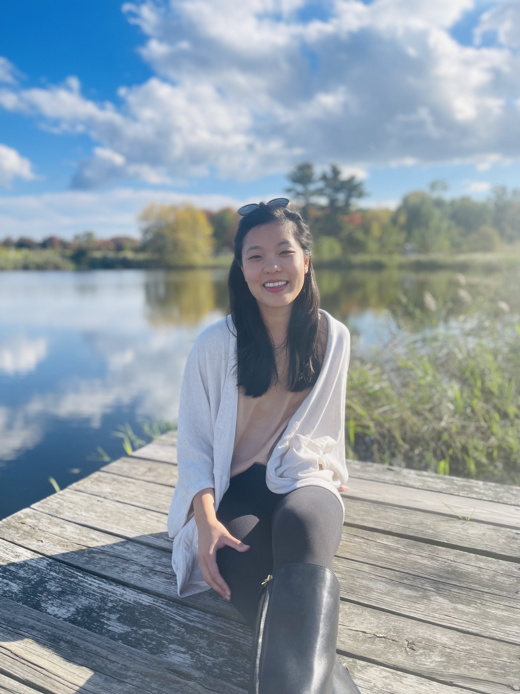

Cherrie Kwok
I am an Assistant Professor in the Department of English and a Researcher Affiliate at the Center for Social Science Inquiry at the University of Iowa. I research and teach courses about global Anglophone literature from the 19th century to today—stories that are written in English, but in regions far away from Britain. I center writers who interrogate western imperialism, focusing on voices that are typically overlooked or erased to ask what their stories can teach us about class, gender, labor, race, resistance, power, and justice today.
These stories belong to everyone, within and outside the academy. I like collaborating on projects with scholars, community members, journalists, and the public. Feel free to say hello at drcherriekwok@proton.me
Learn More →